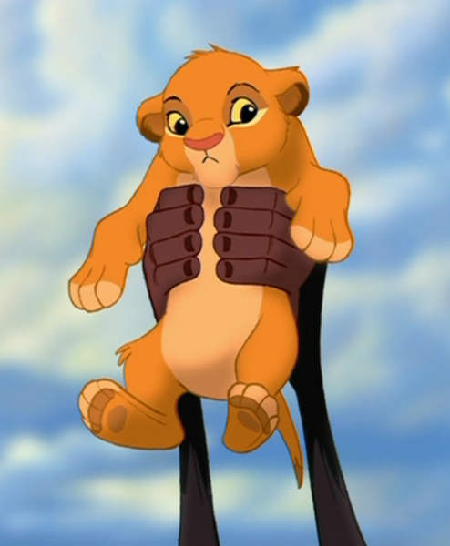
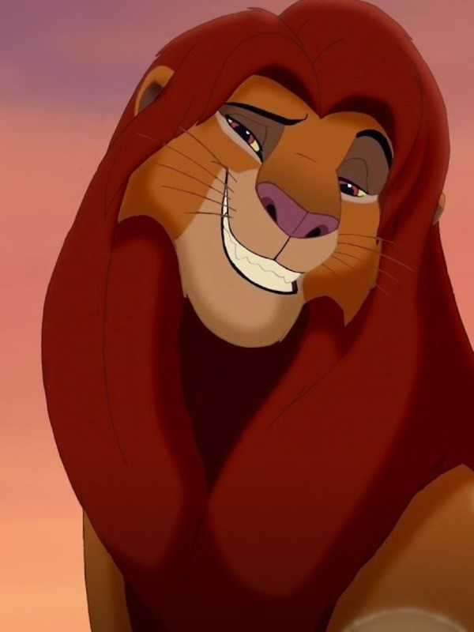
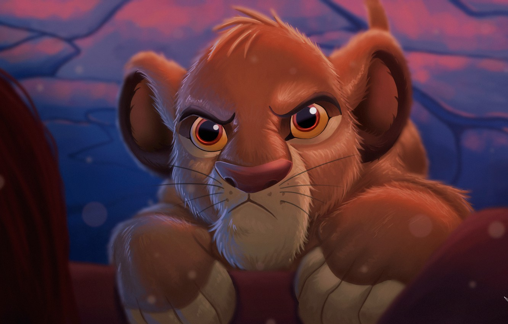

Simba
Navigation
Simba — Mufasas Sohn und zukünftiger Herrscher über das Königreich. Wird von seinem Onkel Scar ins Exil vertrieben und ihm wird die Schuld am Tod seines Vaters gegeben. Er wird bei Timon und Pumbaa aufgenommen, kehrt dann jedoch zurück, um seinen wahren Platz im ewigen Kreis des Lebens einzunehmen.

Simbas Leben nimmt eine dramatische Wendung, als sein Vater Mufasa in der Schlucht getötet wird. Im Glauben, dass er für den Tod seines Vaters verantwortlich ist, für den in Wahrheit Scar die Schuld trägt, verlässt er verzweifelt das Geweihte Land und möchte seine Vergangenheit vergessen. Nach einem langen Marsch durch eine Wüste, dessen tatsächliche Länge ungewiss bleibt, trifft er auf das Erdmännchen Timon und das Warzenschwein Pumbaa, die ihm den Spruch "Hakuna Matata" und dessen Bedeutung, nämlich "keine Sorgen" näherbringen. Er unternimmt keinen Versuch ins geweihte Land zurückzukehren. Aus dem stolzen und frechen Löwen, der sich nichts mehr wünscht, als König zu werden, ist ein Löwe geworden, der seine Vergangenheit nicht länger beachten will und seinen Hoheitsanspruch abgibt.
Diese Situation ändert sich, als Simba eines Tages zufällig auf seine alte Freundin Nala trifft, die verzweifelt nach Hilfe sucht, da das Geweihte Land vertrocknet und ohne Leben ist. Die beiden erkennen sich zunächst nicht; erst nach einem Kampf, der genau in derselben Kampfposition endet wie ein früherer Kampf der beiden Freunde, erkennt Simba seine alte Freundin wieder, und diese ihren totgeglaubten Freund. Mufasa erklärt Simba, dass er in ihm lebe und, dass Simba der zukünftige König sei. Mit neuem Selbstvertrauen kehrt Simba letztendlich ins geweihte Land zurück, um Scar von seinem Thron zu stürzen. Er weigert sich, Scar umzubringen, eine Aufgabe, die schließlich die Hyänen übernehmen. Mit einem Siegesbrüllen auf dem Königsfelsen ist er der neue, rechtmäßige Herrscher des geweihten Landes.
  Familie
Mufasa (Vater)
Sarabi (Mutter)
Scar (Onkel)
Nala (Ehefrau)
Kiara (Tochter)
Kovu (Schwiegersohn)
Eigenschaften
| Name | Simba |
| Spezies | Löwe |
| Geschlecht | Männlich |
| Geburtsdatum | 18. August |
| Typ der Gestalt | Positiv |
| Charakter | Kühn, Fröhlich, Trotzig, Einfühlsam, Heldenhaft, Mutig, Zuversichtlich, Sicher, Lieb |
| Aussehen | Goldenes Fell, hell-gelbe Maul, Bauch und Pfoten, rosa Nase, gelbes Augenweis |
| Ziel | Den ihm rechtmäßig vorbestimmten Thron nehmen, den bösen Onkel stürzen, das Königreich vor den Feinden schützen |
| Kräfte und Fähigkeiten | Körperstärke, Geschwindigkeit und Geschick |
| Waffe | Gebrüll, Fangzähne, Krallen |
| Schicksal | Ist ins Geweihte Land zurückgekehrt, wurde der neue König |
Video
https://www.youtube.com/embed/7TeZY6Nvn9U